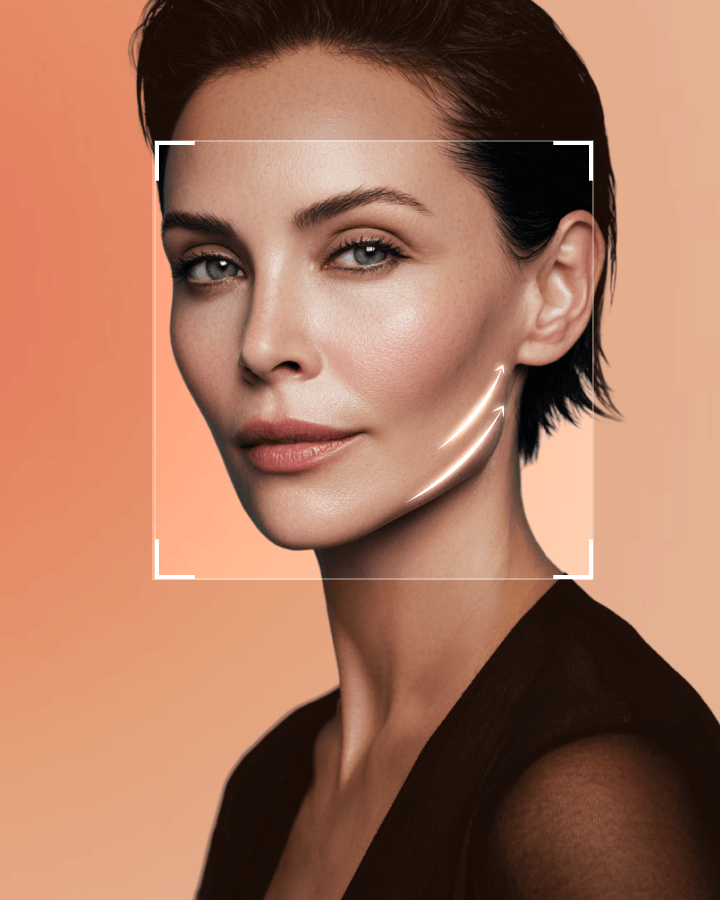

以数据证明的弹性
 保健福祉部认证医疗机构
保健福祉部认证医疗机构 凡是与美 手术技术专利与商标
凡是与美 手术技术专利与商标 连续4年骨轮廓手术量第一，获韩国纪录院认证
连续4年骨轮廓手术量第一，获韩国纪录院认证 凡是与美 手术技术专利与商标
凡是与美 手术技术专利与商标 凡是与美医学论文大数据
凡是与美医学论文大数据 凡是与美医学论文大数据保健福祉部认证医疗机构凡是与美 手术技术专利与商标连续4年骨轮廓手术量第一，获韩国纪录院认证凡是与美 手术技术专利与商标凡是与美医学论文大数据凡是与美医学论文大数据
凡是与美医学论文大数据保健福祉部认证医疗机构凡是与美 手术技术专利与商标连续4年骨轮廓手术量第一，获韩国纪录院认证凡是与美 手术技术专利与商标凡是与美医学论文大数据凡是与美医学论文大数据逆转时光，恢复年轻的紧致。

提拉手术中心提供 凡是与美 专属的私人医生系统，由获得认证的整形外科医生提供一对一专属服务，从原因分析到手术全程负责。
恢复才是真正的开始！专业术后管理


是的。凡是与美将迷你容积提升与全面部提升列为治疗范围不同的两种独立提升方案。您可以根据面部状况和目标，咨询日后是否需要额外提升。
各方案的差异
在 凡是与美
迷你提升和全面部提升针对不同的衰老问题，因此应基于患者的面部状况，通过面诊确认合适的方案。
如何比较各方案
在 凡是与美
已做过拉皮后是否追加提升手术需要通过咨询确定，因为合适的方案取决于患者的状况和既往手术史。
患者可以查看的内容
在 凡是与美
是的。凡是与美的迷你容积提升将下颌线迷你提升与前颊脂肪移植相结合，以解决松弛和容积问题。
治疗方案如何制定
在 凡是与美
迷你提升与脂肪移植的目标不同，患者应与医生比较治疗目的，而不应仅凭时长判断。
各页面说明了什么
在 凡是与美
有下颌线下垂、面部皮肤松弛、皱纹或中面部容积困扰的患者，可查看 凡是与美的迷你容积提升页面，并通过面诊确认是否适合。
手术针对的问题
在 凡是与美
凡是与美在说明其纳米脂肪移植技术时，强调高存活率的移植方法，而非固定的保留百分比。
影响脂肪存活的因素
在 凡是与美
凡是与美 列出 容积迷你面部提升术 as a 2-小时 手术 under 局部麻醉.
手术信息
在 凡是与美
迷你提升通常针对局部松弛和容积问题，而 凡是与美的全面部提升页面则专注于全脸的深层皱纹和松弛。
迷你拉皮的重点
全脸拉皮的重点
是. Patients can 询问 about facelift 费用 before 就诊 凡是与美 through the 价格咨询 页面, 在线 consultation, or 通讯 通道.
如何咨询费用
在 凡是与美